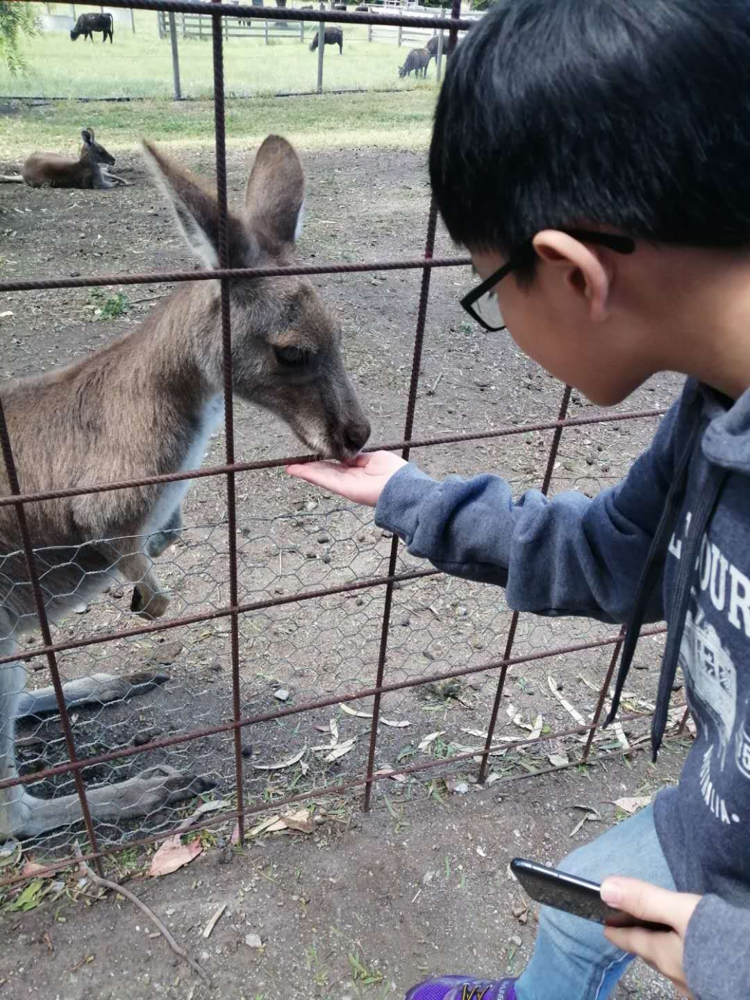
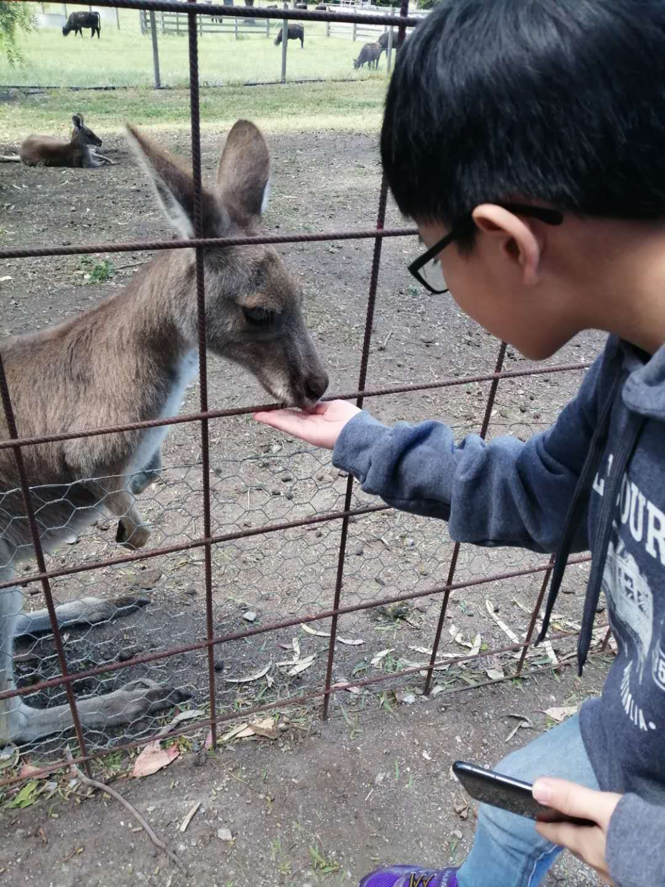
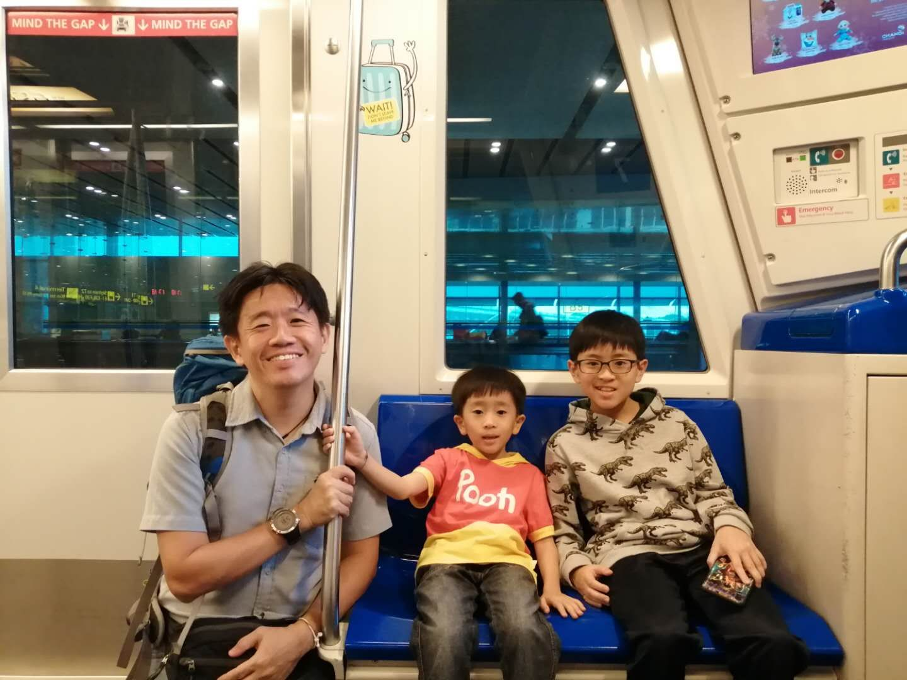
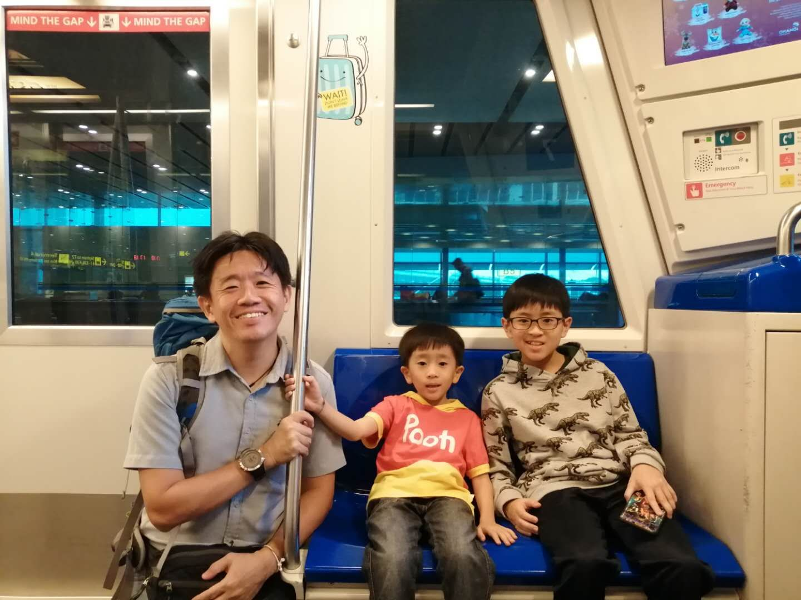

AN EXCITING HOLIDAY
Outing with my family
On 23th november 2019, I went to Australia with my family. We had taken a lot of beautiful photos. We were amazed when we saw the breath-taking sceneries. We also grabbed the golden oppurtunity to feed the cute kangaroos,koalas and admire the crowd of penguins. Besides that, we had a whale of a time at the Puffing Billy Railway. It's really attractive. We went to the Sydney Opera House and had learnt a lot there. We also went to the Brighton Beach in Melbourne. The gust wind was so amazing! I love Australia and I hope we can travel there in the future.
Melbourne

Melbourne is the coastal capital of the southeastern Australian state of Victoria. At the city's centre is the modern Federation Square development, with plazas, bars, and restaurants by the Yarra River. In the Southbank area, the Melbourne Arts Precinct is the site of Arts Centre Melbourne – a performing arts complex – and the National Gallery of Victoria, with Australian and indigenous art.


 

 
